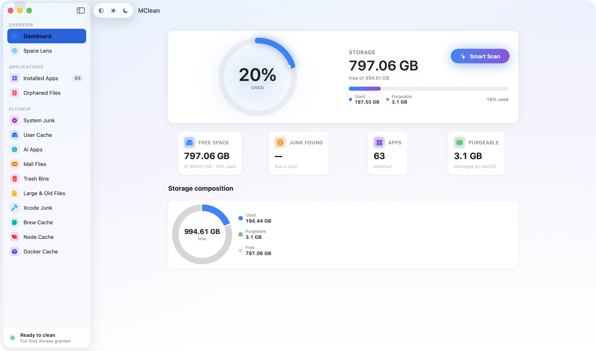

A free, open-source Mac cleaner and app uninstaller.
or brew install --cask mclean

Apple solders down 256 GB drives and charges a fortune for the next tier, so every gigabyte you already paid for matters. Most Mac cleaners answer that with subscriptions, telemetry, and dramatized "47 GB of junk detected!" badges. MClean is the opposite: a free, open-source, native macOS app that removes apps cleanly, clears genuine junk, and tells you the truth about what it can and can't free.
Drag an app and MClean finds every preference, cache, container, launch agent, and log it left behind — then trashes all of it at once.
Surfaces files left over by apps you deleted long ago, with an always-ignore list for the false positives you want to keep.
System junk, user caches, Xcode DerivedData, Homebrew, npm/yarn/pnpm, Docker, and AI-app logs — scanned in parallel.
Find the multi-gigabyte files aging in Downloads, Documents, and Desktop — with folders you can exclude from the scan.
rmEverything goes to the Trash via the system API. Wrong call? Drag it back. Nothing is shredded.
No telemetry, no analytics, no accounts, no network calls. The app doesn't know you exist.
| MClean | CleanMyMac | Pearcleaner | OnyX | |
|---|---|---|---|---|
| Price | Free | $40+/yr | Free | Free |
| Open source | Yes (MIT) | No | Source-available | No |
| App uninstaller + orphans | Yes | Yes | Yes | No |
| No telemetry | Yes | No | Yes | Yes |
| No subscription | Yes | No | Yes | Yes |
| Trash-only (recoverable) | Yes | Partial | Yes | No |
| Honest about purgeable space | Yes | No | n/a | n/a |
Comparison reflects publicly documented features as of 2026; corrections welcome via PR.
rm. Everything removed goes to the Trash. If it was wrong, drag it back.brew install --cask mclean
Or download the signed, Apple-notarized DMG from GitHub. Requires macOS 13 (Ventura) or later. Universal — Apple Silicon and Intel. No Gatekeeper warnings, no quarantine workaround.
Yes — completely free and open source under the MIT license on GitHub, and installable with Homebrew. No subscription, no trial, no paywalled features.
MClean does what people actually use CleanMyMac for — a real app uninstaller that catches every leftover, junk and cache cleanup, and orphaned-file detection — as a free, native, open-source app with no subscription and no fear-based scans.
Everything removed goes to the Trash via the system API, so mistakes are recoverable. You review every item with its real path before removal, and high-risk system paths are hard-excluded in code.
No. No telemetry, no analytics, no crash reporting, and no network calls. MClean doesn't even need a network connection to run.